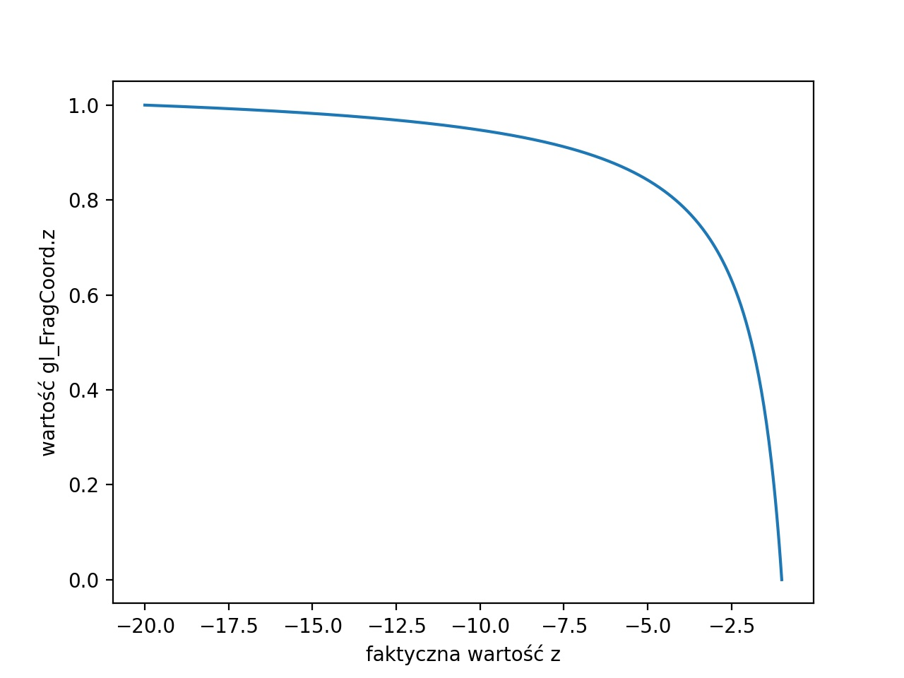

W projekcie zaimplentowane jest ładowanie modeli z użyciem biblioteki assimp. Obiekty ładuje się za pomocą funkcji loadModelToContext(std::string path, Core::RenderContext& context) pierwszym jej argumentem jest ścieżka, pod którą znajduje się model, drugim argumentem jest referencja do RenderContext. Ta struktura przechowuje informacje o modelu, m.in. jego VAO czy liczba wierzchołku. Rysuje się go za pomocą funkcji Core::DrawContext(Core::RenderContext& context). Teraz przykładowo rysowana jest sfera ładowana z pliku.
W trakcie poprzednich zadań zdefiniowaliśmy funkcje tworzące macierze widoku i projekcji. Aby narysować model, należy najpierw zdefiniować macierz modelu, przemnożyć ją przez macierz kamery i macierz widoku i wysłać ją do GPU i dopiero narysować model. Te operacje są bardzo powtarzalne i można je przenieść do osobnej funkcji. Dlatego w ex_4_1.hpp znajduje funkcja drawObjectColor która przyjmuje rysowany obiekt jako Core::RenderContext&, macierz modelu jako glm::mat4 i kolor jako glm::vec3. ### Zadanie Wszystkie obiekty rysowane przez drawObjectColor rysują się na jeden kolor, napraw to. Wewnątrz funkcji prześlij kolor jako uniform do GPU (za pomocą funkcji glUniform3f) i tak zmodyfikuj shader fragmentów, żeby ustalić go kolorem wyjściowym.
Korzystając z tej funkcji, stwórz układ słoneczny z przynajmniej jedną planetą, która posiada księżyc. Planeta powinna poruszać się wokół słońca a księżyc wokół planety.
Rozbuduj układ planetarny do przynajmniej 5 planet i pasa asteroid. Ściągnij z internetu/stwórz kilka prostych modeli asteroid, z których zbudujesz pas asteroid.
Celem tego zadania jest dodanie statku, który będzie latać po układzie planetarnym.
Załaduj model statku, który jest w pliku spaceship.obj. Stwórz zmienne globalne spaceshipPos oraz spaceshipDir, które będą określać pozycję i kierunek, w którym statek się porusza. Później będziemy je zmieniać za pomocą przycisków, na razie wewnątrz funkcji processInput przypisz do nich odpowiednio cameraPos+1.5*cameraDir+glm::vec3(0,-0.5f,0) oraz cameraDir. W ten sposób po prawidłowym ustawieniu macierzy statek będzie znajdował się zawsze przed kamerą.
Przesuń i obróć statek w odpowiedni sposób. Przesunięcie zrealizujemy przez translację do spaceshipPos natomiast macierz statku liczy się tak samo, jak macierz kamery, tylko zamiast cameraDir bierzemy spaceshipDir i na końcu trzeba tę macierz odwrócić (lub transponować, co jest tym samym, ponieważ mówimy o macierzy ortonormalnej).
Możliwe, że model nie jest skierowany w stronę tej samej osi, co domyślnie w openGL, w tym wypadku musisz dodać dodatkową rotację o stały kąt, która naprawi ten problem.
W tej chwili klawisze ustawiają kamerę, do której podczepiony jest statek. Zmodyfikuj aplikację, żeby klawisze przesuwały statek, a kamera była do niego podczepiona. Aby to zrobić, wystarczy w obsłudze klawiatury modyfikować wektory spaceshipPos i spaceshipDir. Natomiast cameraPos i cameraDir uzależnić od wektorów spaceshipPos i spaceshipDir.
W tej chwili szybkość poruszania się statku/kamery jest uzależniona od liczby klatek, co daje różne efekty na różnych komputerach i jest raczej niepożądane. Aby to naprawić, musimy obliczyć, ile czasu minęło między klatkami i od tego uzależnić przesunięcia oraz obroty. Utwórz zmienne globalne float lastFrameTime oraz float deltaTime, następnie w funkcji renderScene dodaj oblicz deltaTime = time-lastFrameTime i przypisz do zmiennej lastFrameTime wartość time. Nie chcemy, żeby wartość deltaTime była zbyt duża, gdy nagle spadnie liczba klatek, dlatego ucinamy ją od góry przez 0.1.
Wykorzystaj deltaTime w funkcji processInput aby uniezależnić prędkość poruszania się od liczby klatek na sekundę.
Podmień model statku na jakiś inny.
dodaj obsługę myszki, która będzie obracać kamerą.
Bufor głębokości zapisuje, w jakiej odległości od kamery znajduje dany piksel. Dzięki temu przy rysowaniu kolejnych obiektów można odrzucić te piksele, które znajdowałyby się za narysowanymi. Ten mechanizm jest automatycznie, żeby go uruchomić, wystarczy dodać instrukcję glEnable(GL_DEPTH_TEST), poza tym przed rysowaniem klatki należy wyczyścić bufor głębokości, co robimy w instrukcji glClear(GL_COLOR_BUFFER_BIT | GL_DEPTH_BUFFER_BIT).
Sprawdź, co się stanie, gdy nie włączymy glEnable(GL_DEPTH_TEST) oraz sprawdź co, się dzieje, gdy nie czyścimy żadnego bufora lub gdy czyścimy tylko bufor koloru czy tylko bufor głębokości. Dlaczego dzieje się to, co widzisz?
W tej części zwizualizujemy jak wygląda bufor głębokości przy pomocy skali szarości. Zrealizujemy poprzez napisanie odpowiedniego shadera.
Uwaga nie jest to faktycznie rysowanie bufora głębokości, to wymagałoby stworzenie FrameBufferObject renderowanie głębokości do niego i narysowanie wyniku na ekranie. Zrobimy to na późniejszych zajęciach przy okazji rysowania cieni.
Wykorzystamy wbudowaną zmienną gl_FragCoord we fragment shaderze. Zawiera ona informacje o pozycji fragmentu.
We fragment shaderze podmień wartości R G B w shaderze fragmentów na gl_FragCoord.z.
Zauważ, że obiekty są bardzo jasne i stają się ciemniejsze, dopiero gdy kamera podjedzie bardzo blisko. Wynika to z tego, że wartości z w gl_FragCoord nie są liniowe ze względu na rzutowanie perspektywiczne omówione na poprzednich zajęciach. Poniższy wykres prezentuje przykładową różnicę między faktyczną wartością a wartością w gl_FragCoord. 
My chcielibyśmy wyświetlać je liniowo. W tym celu będziemy musieli wrócić do współrzędnych w przestrzeni świata. Zauważ, że wartości gl_FragCoord.z są z zakresu od \([0,1]\) a nie \([-1,1]\) jak są zapisane współrzędne w przestrzeni ekranu. Dlatego pierwszym krokiem będzie przekonwertowanie ich (poprzez pomnożenie przez 2 i odjęcie 1). Współrzędne w przestrzeni ekranu obliczamy wzorem \[z'=-\frac{(n + f)}{(n - f)}- \frac{(2 n f)}{z(n - f)}.\]My chcemy obliczyć \(z\) po przekształceniu wzoru otrzymujemy: \[z=\frac{-2nf}{z'(n-f)+n+f}.\] ### Zadanie We fragment shaderze uwórz funkcję, która oblicza \(z\) i wyświetl zlinearyzowaną odległość. Pamiętaj, że wartość \(z\) jest z zakresu od \(n\) do \(f\), dlatego zmień podziel ją przez \(f\) przed rysowaniem.
Wykorzystaj informację o odległości, żeby dodać do sceny efekt mgły. Zmieszaj kolor obiektu z kolorem tła, jako współczynnik weź wartość z poprzedniego zadania.
Czasem chcielibyśmy, żeby niektóre wyświetlane elementy były inaczej traktowane przez bufor głębokości. Przykładowo chcielibyśmy stworzyć bardziej złożone tło dla naszej sceny. Chcemy wtedy, żeby to tło było ,,za’’ każdym innym obiektem w scenie. Możemy to osiągnąć poprzez namalowanie tła na początku, a następnie usunięcie zawartości bufora głębokości.
Dodaj jakiś rodzaj tła w sposób opisany powyżej. Mogą być to na przykład małe sfery udające gwiazdy. Prostokąt w przestrzeni ekranu, który będzie zmieniał kolory czy kręcący się prostopadłościan.